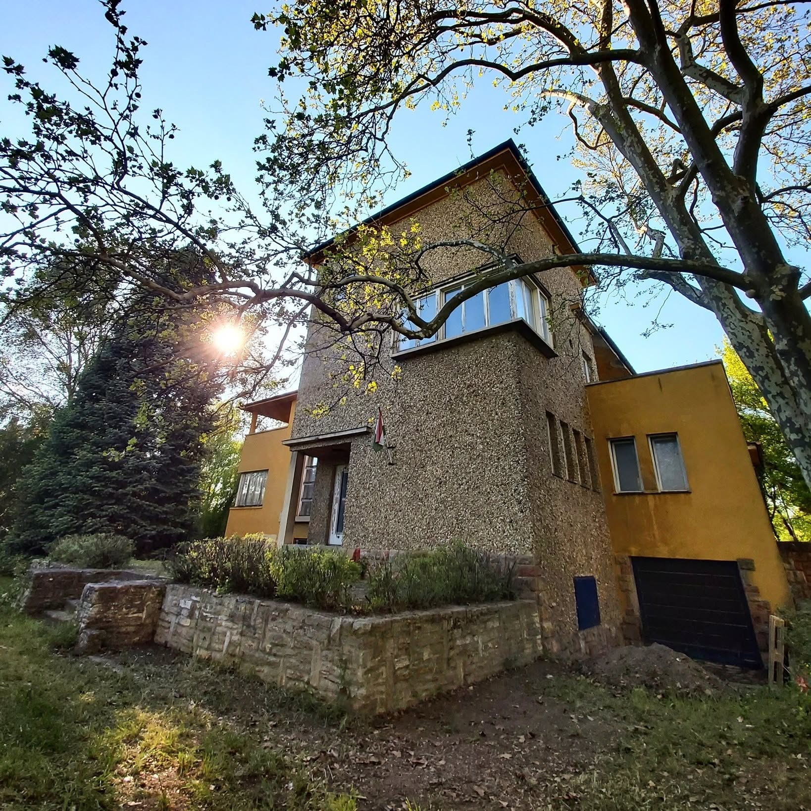
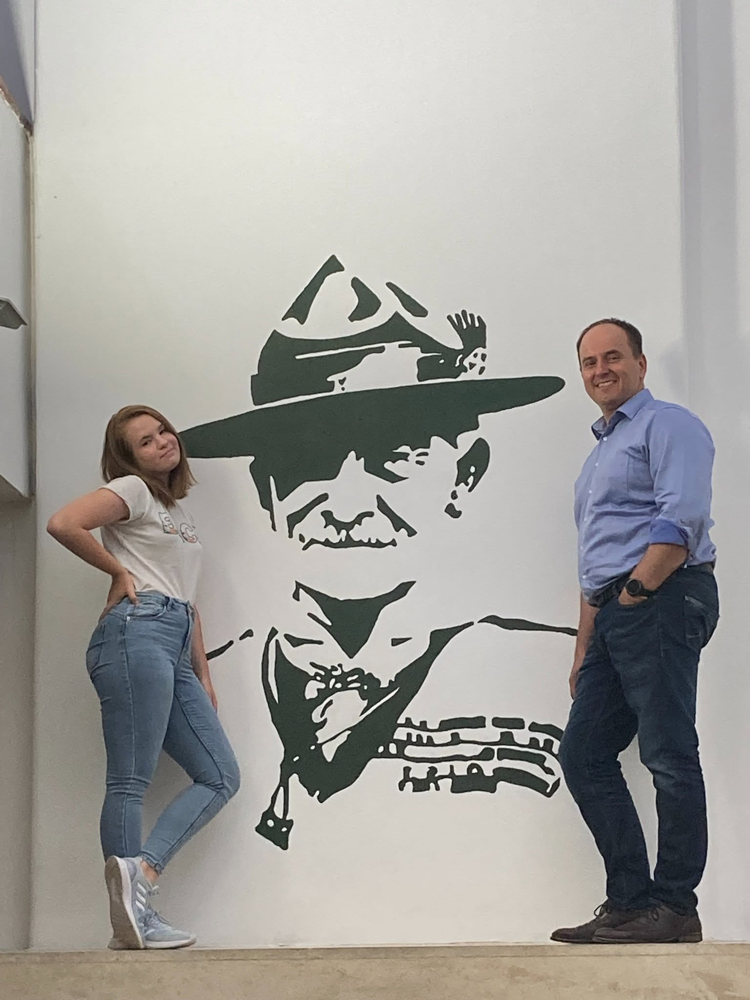

Bezsilla villa
2100 Gödöllő, Cserkész köz 1.
Itt tartjuk a foglalkozásainkat, találkozóinkat és közösségi programjainkat. Ide jöhetsz, ha többet szeretnél megtudni a csapatunkról, vagy ha egyszerűen csak körülnéznél nálunk.


Bezsilla Villa